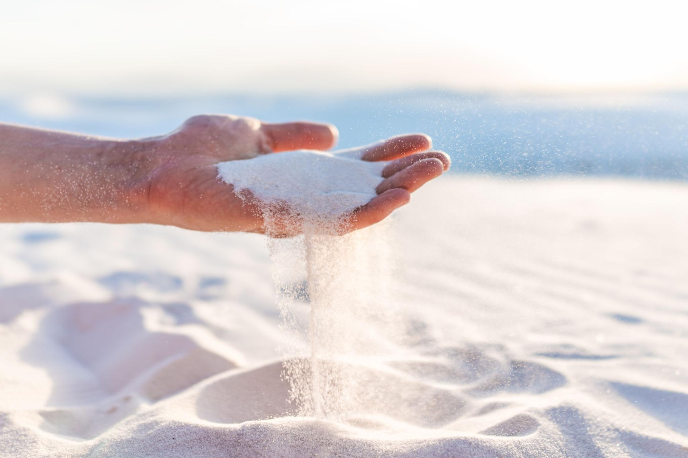
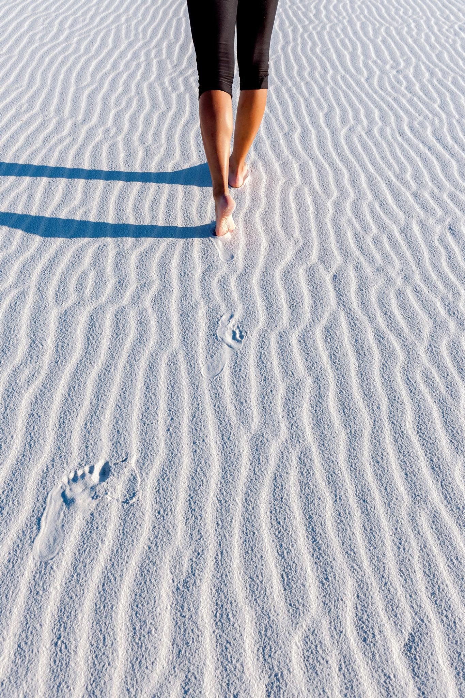
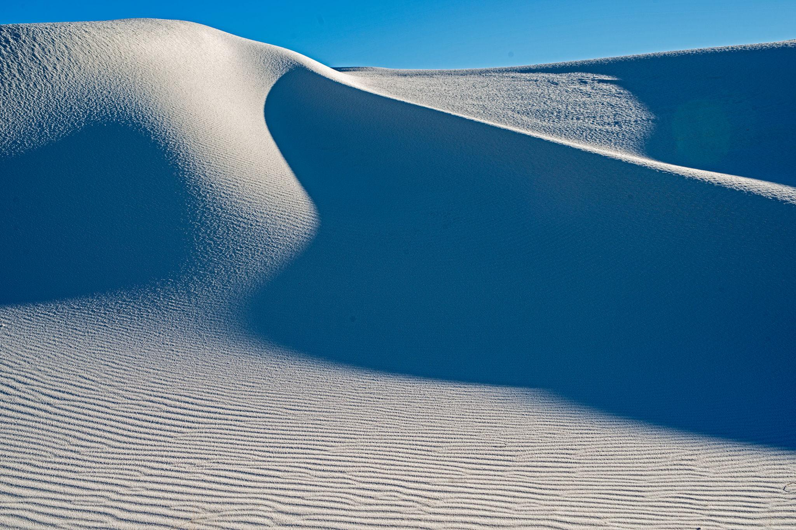
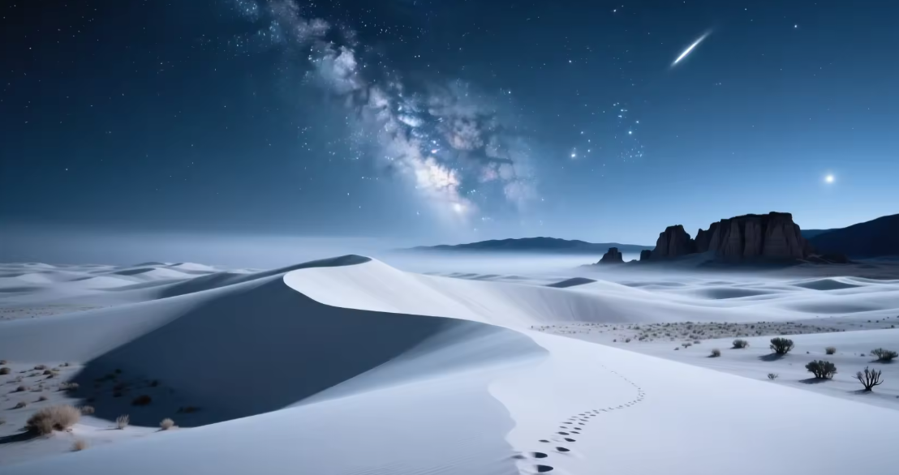

Overview
(A Guide to the World’s Biggest Pile of Magic)
If the desert had a glitch in the matrix, it would be White Sands. Nothing prepares you for it — not pictures, not videos, not explanations. You roll up expecting sand… and instead find yourself in a blinding sea of white dunes that look like snow, sugar, salt, or the world’s biggest spilled margarita rim.
Welcome to White Sands National Park, where the ground squeaks, the dunes move, and the whole place looks like it was designed by a bored god armed with a bucket of chalk.

WHY THE SAND IS WHITE (THE REAL REASON)
It’s not quartz.
It’s not salt.
And it sure as hell isn’t snow that got lost.
This place is made of gypsum crystals — the same stuff in drywall — ground down over millions of years by wind and water into soft, cool, blinding-white grains.
Gypsum normally dissolves in liquid… but this valley has no outlet, so the water evaporates and leaves the mineral behind like nature’s dust pile.
Result:
The largest gypsum dune field on Earth.
Nothing else like it exists.

WHY IT STAYS COOL, EVEN IN 100-DEGREE HEAT
Here’s the magic trick:
Gypsum reflects sunlight like a champ.
So while normal sand scorches your feet like Satan’s hotplate, White Sands stays barefoot-friendly — cool to the touch, even in full sun.
Your brain won’t believe it.
Your feet will.

HOW THE DUNES MOVE
These dunes aren’t just sitting around looking pretty.
They crawl.
Wind pushes them across the desert at about 10–30 feet per year. Some dunes swallow plants. Some swallow the road. Some swallow each other in dune-on-dune crime.
The whole landscape is alive and shifting, like a slow-motion ocean frozen in white.

WHY YOU’LL REMEMBER THIS DAY FOREVER
Because nothing else on Earth looks like this. Because the landscape feels alien, peaceful, prehistoric, and futuristic all at once. Because the dunes move, the colors shift, the silence hits hard, and the whole place looks like a dream sequence.
White Sands isn’t a stop on your trip.
It’s a memory furnace — a place that burns itself into your brain and stays there.